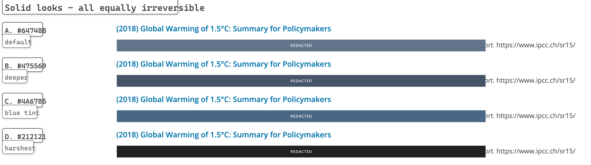
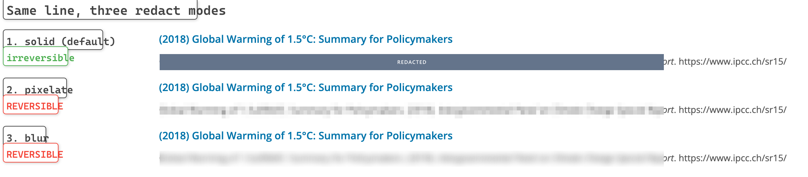
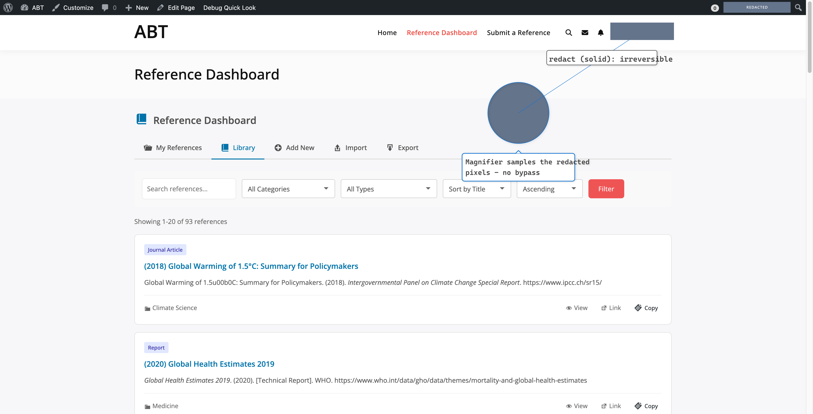

image-annotator-mcp v1.1.0 · 由 examples/generate-redaction-example.js 用真实管线生成
纯色填充可以是任何颜色，四种看起来差别很大，不可逆性完全一样。

默认值已从 D（#212121 黑条）改为 A（#64748B，slate 中间调）：比黑条柔和得多，同时和白色页面、深色导航栏都拉得开距离，不会像浅灰那样糊进背景里。标签文字颜色会自动跟随填充色亮度（深底白字 / 浅底深字），所以换成任何颜色都不会出现白字看不见的情况。
同一行文字，三种 mode。只有 solid 是打码，另外两种只是视觉弱化——模糊看着柔和，但内容还在。

| 模式 | 可逆性 | 用途 |
|---|---|---|
solid（默认） | 不可逆 | 敏感信息 |
pixelate | 可逆 | 仅视觉弱化 |
blur | 可逆 | 仅视觉弱化 |
放大看 pixelate 与 blur 两行：字词轮廓仍在。像素化保留块均值（Depix 类攻击可还原），高斯模糊是可逆卷积——不存在"调大参数就安全"的模糊。这两种模式每次使用都会产生运行时警告。
遮盖两处账号名，并用放大镜验证无法绕过。

圆圈是 magnifier，target 直接对准被打码的区域。它取样的是已打码的图像，所以只看到填充色——旧实现里放大镜会从原图取样，可以把被遮内容放大展示出来。
{"type":"redact"} 的默认 solid 模式。svg 输出无法打码（标注层不含图像像素、且可被编辑删除）；redact_patterns 命中时会直接报错。redact_patterns 遮的是标注自身的文本框（含安全余量），不是截图里的原文——工具不做 OCR。solid 画在所有标注之上；pixelate/blur 作用于底图，标注仍绘制在其上。blur "打码"过的截图并未被遮住，内容可完整还原，请重新生成。